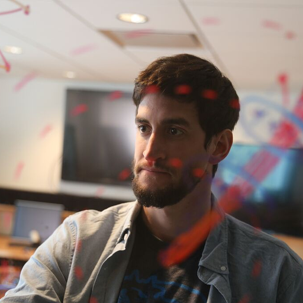
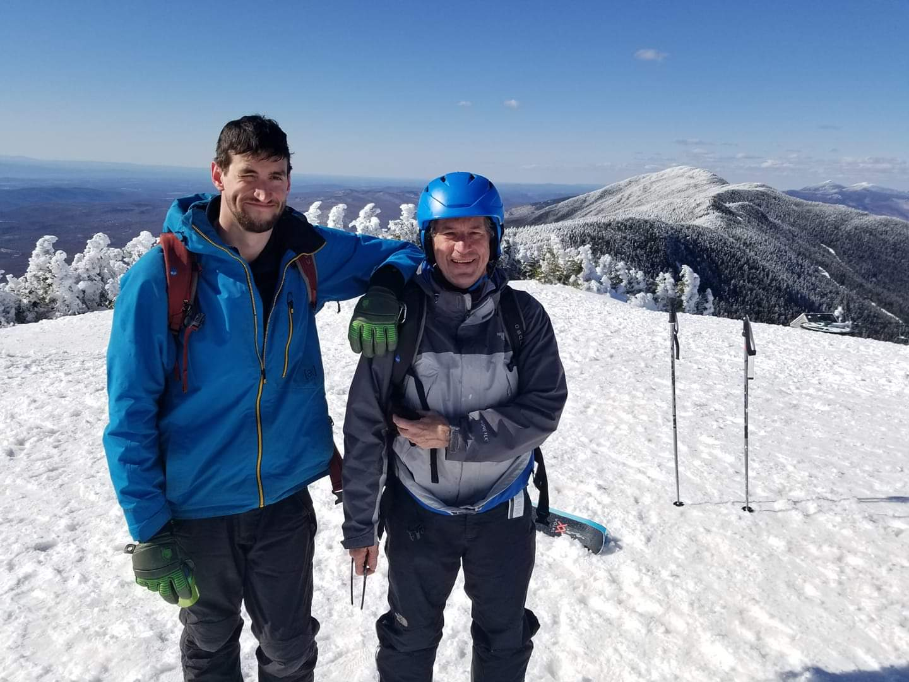

hello

My name is Matthew Peveler. I am currently working as a fullstack software engineer at PopSQL, a modern, collaborative SQL editor. Before that, I was working on my PhD in Computer Science at Rensselaer Polytechnic Institute, where I worked in the Cognitive and Immersive Systems Lab under my advisors, Dr. Selmer Bringsjord and Dr. Hui Su. My research was in the application of reasoning and planning in the usage of large-scale cognitive systems. Outside of work, I am a principal maintainer on a number of open-source projects, such as Submitty, phinx, and asciidoc-py. See my CV and GitHub for the full list of my research and work.
CV (11.04.23) | github.com/MasterOdin
Outside of work and programming, I am an avid skier, consumer of various forms of media, and drinker of beer. I have had the great fortune of working as a Ski Patroller at Sugarbush, VT during the winters from 2015 onward. I previously held my EMT-B certification for NYS where I rode with RPI Ambulance as well as worked for a private ambulance company.

My dad and I standing atop Sugarbush, VT.